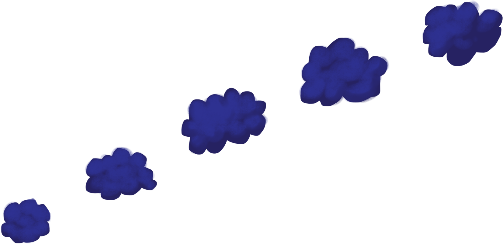

Welcome to StairWELL


Hi, I’m XX,
Welcome to StairWELL, an interactive sculpture where you can gather, reflect, and connect.
Purdue students that noticed the emotional ups and downs of life.
Sometimes we’re heading upstairs
Sometimes we’re heading down
And sometimes it’d just be nice to play around!
So Draw a squiggle that captures how you’re feeling Feel free to try a few different times and then hit next.
All UI, style, and questions are in prototyping and do not reflect the final product